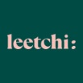

Pourquoi Leetchi
Au moment de choisir le système pour récolter les dons, la cagnotte en ligne Leetchi s’est imposée comme une évidence. Son utilisation est très simple, tant pour le donateur que pour l’organisateur, permettant de contribuer rapidement tout en nous laissant plus de temps pour organiser d’autres projets. Leetchi est également très accessible, que ce soit depuis un ordinateur ou via son application mobile. Nous voulions que l’objectif de 900 000 € soit très visible, et l’interface de Leetchi nous permet d’afficher clairement cet objectif. De plus, il est facile de partager la cagnotte grâce à un simple lien. Enfin, et surtout, nous tenons à ce que toutes les transactions se fassent dans une sécurité optimale, Leetchi bénéficiant de plus de 10 ans d’expérience et de 22 millions d’utilisateurs.
Les donateurs
Pour l'instant, les dons sont l'unique source de revenu du projet. Ainsi, nous remercions avec une attention toute particulière nos 2 donateurs. Nous vous permettons ici de les remercier à votre tour en visitant leurs réseaux sociaux.